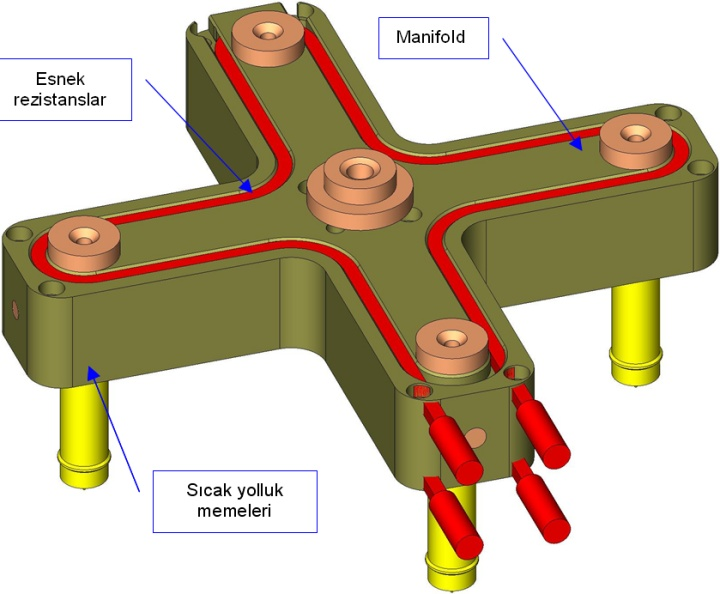
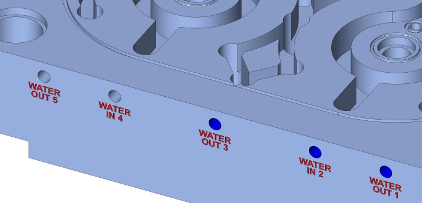
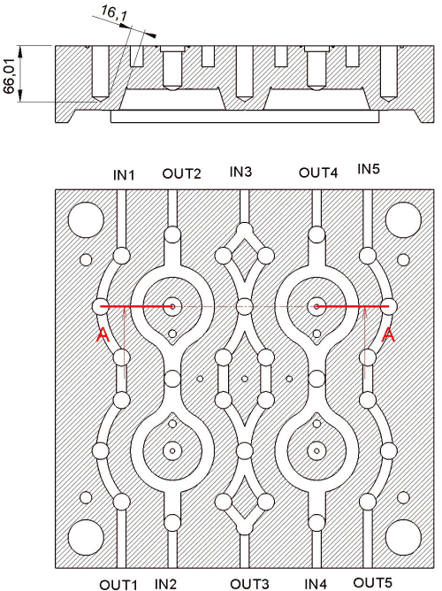
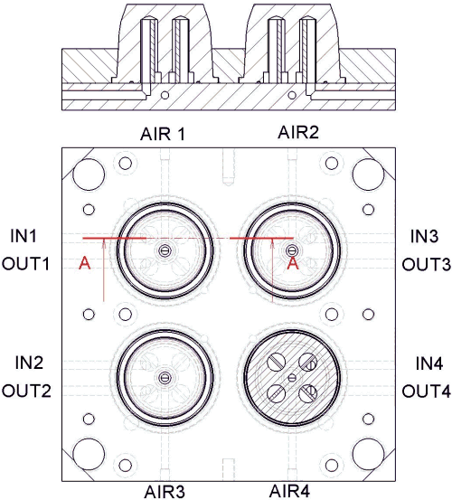
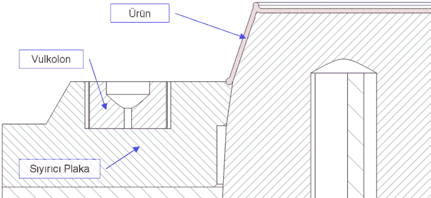
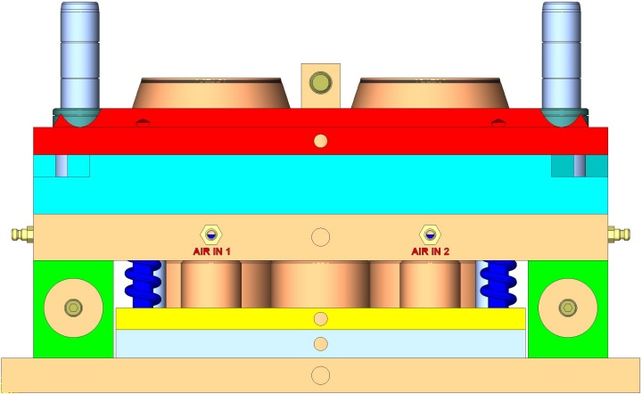
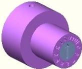
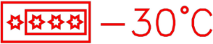
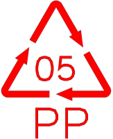
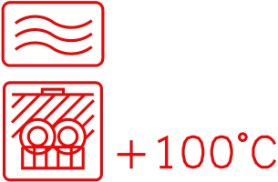

|
Yolluk Sistemi
Kalýpta 4 adet sýcak yolluk memesi kullanýlmýþtýr. Her meme üzerinde sýcaklýðý ölçen termokupl vardýr. 2 adet esnek rezistans bulunmaktadýr. Rezistans yuvalarý özenle ve belirli kurallara uyarak açýlmalýdýr. 2 adette manifold ýsýsýný ölçen termokupl kullanýlmalýdýr. Sýcaklýðý verimli þekilde kontrol edilemeyen manifold sistemlerinde, plastiðin viskozitesinde farklýlýklar oluþacaðý için, her gözden farklý gramajlar alýnacaktýr. Bir göz eksik baský verdiði halde diðer gözden çapaklý ürün alýnacaktýr. Aþýrý yükselen sýcaklýða müdahale edilememesi durumunda, plastik bölgesel olarak yanacaktýr.
Manifold plakasýnýn malzemesi, yüksek ýsýlarda çalýþtýðý için, sýcak iþ çeliklerinden seçilmelidir. Sýcak iþ çelikleri, yüksek sýcaklýklarda, kararlýlýk gösteren çeliklerdir. Soðuk takým çelikleri, yüksek sýcaklýklara daha kolay genleþtikleri için, kalýp göz aralarý ve plaka düzlemselliði deðiþecek ve kalýp manifold tarafýndan mal kaçýracaktýr. 1.2344 uygun bir çeliktir.
Manifold plakasý üzerindeki sýcaklýðýn diðer plakalara aktarýlmasýna engel olunmalýdýr. Onun için mümkün olan en az baðlantý ile yerine sabitlenmelidir. Tüm sýcak yolluk meme çýkýþlarýnýn , kalýp merkezine uzaklýðý ayný olmalýdýr.

Resim 22 - Sýcak yolluk ve manifold sistemi.
Soðutma Sistemi
Kalýp soðutma sistemi üzerinde tecrübe ile dikkatli olarak çalýþmayý gerektirecek kadar önemli bir konudur. Yetersiz soðutma , çevrim süresini uzatýp ürün maliyetine artýracaktýr. Düzensiz ve dengesiz soðutma ise , ürünün bir tarafýnýn soðumasýna raðmen bir tarafýnýn sýcak olarak kalýptan çýkmasýna sebep olur ki bu ürün kalýp dýþýnda çekmeye devam edecek ve çarpýlacaktýr.
Soðutma suyu tasarýmýnda dikkat edilmesi gereken birkaç önemli nokta.
- Her kalýp çekirdeði ayrý ayrý soðutulmalýdýr.
- Kalýp soðutma kanallarýna köprü atýlmamalýdýr.
- Kalýp içine giren su kalýp üzerindeki ýsýyý alarak kalýptan sýcak olarak çýkar. Kalýbýn sadece bir yönünden su giriþlerini baðladýðýmýzda kalýbýn bir yarýsý soðuk diðer yarýsý ise daha sýcak olacaktýr. Su giriþleri kalýbýn her iki yönünden de yapýlmalýdýr.
- Soðutma kanal ve delik çaplarý mümkün olduðu kadar büyük seçilmelidir.
- Soðutma kanal ve delikleri , kalýp çekirdeðine 12mm'den fazla yaklaþmamasý gerekmektedir. Kalýp boþluðuna yakýn delikler, enjeksiyon baskýsý esnasýnda çökmektedir.
- Bazý ürünlerde kalýp sýcaklýðýnýn belirli bir deðerde tutulmasý, fazla soðutulmamasý gerekmektedir. Kullanýlacak plastik hammaddenin özellikleri iyi tespit edilmelidir.
- Derin ve ince cidarlý, kova, saklama kabý, yoðurt kasesi gibi parçalarda, kalýp çekirdeklerinin aþýrý soðuk olmasý, plastiðin kalýp boþluðun girer girmez yoðunlaþmasýna ve dolayýsýyla kalýbý tamamen dolduramamasýna sebep olur. Bu tarz parçalarýnýn çekirdeklerinin tamamýn ya da en az 1/3'ü bakýr berilyum malzemeden yapýlmalýdýr. Bakýr berilyum, yüksek ýsýl iletkenliði sayesinde, çok çabuk ýsýnan ve çok çabuk soðuyan bir malzemedir.
- Her su giriþ ve çýkýþý numaralandýrýlmalý ve belirtilmelidir.
- Soðutma suyunun dýþarý kaçmamasý için O-ring kanallarý açýlmalýdýr.
- Belirli aralýklarla soðutma kanallarý temizlenmelidir. Kireçlenen kanallar verimli soðutma saðlayamazlar.

Resim 23 - Numaralandýrýlmýþ su giriþ ve çýkýþlarý (diþi plaka)

Resim 24 - Diþi plaka soðutma kanal ve delikleri

Resim 25 - Erkek soðutma sistemi
Ýtici Sistem
Kalýptan ürünün çýkarýlmasýnda kullanýlan itici sistemin bir çok çeþitleri mevcuttur. Bu kalýp tasarýmýnda, ürün sýyýrýcý plaka yardýmýyla kalýp dýþýna atýlýr.
Ýtici sistem tasarýmýnda dikkat edilmesi gereken önemli noktalar.
- Sýyýcý plaka erkek çekirdek üzerine belirli açý ile oturtulmalýdýr. Bu açýnýn 8° olmasý uygundur.
- 12mm'lik mal kesme bölgesi yeterlidir.
- Sýyýrýcý plakanýn kalýnlýðý, plaka ölçüleri ve ortasýndaki büyük boþaltmalar dikkate alýnarak, çarpýlmasýný önleyecek deðerde seçilmelidir.
- Sýyýrýcý plaka ve erkek figürlerin malzemeleri ayný ve ayný sertlikte seçilmemelidir. Bu yanlýþ zamanla iki parçanýn birbirine sarmasýna ve deforme olmasýna sebep olur.
- Sýyýrýcý plakanýn önüne ve arkasýna, vulkolon konularak , kalýp kapanmasýnda ses yapmasý önenir.
- Ýtici plakalarýn önüne yay koyarak, sýyýrýcý plakanýn birden fazla hareket etmesi saðlanabilir.
- Sýyýrýcý plakaya kalýp þekline göre en az 3 ve daha fazla sayýda þapkalý burç konulmalýdýr.
- Ýtici plakasý konulmayan sadece sýyýrýcý plakasý olan sistemlerde, sýyýrýcý plakasýný sýnýrlandýracak, istenilen mesafeden fazla gitmesini engelleyecek sýnýrlandýrma mekanizmasý konulmalýdýr.
- Ýtici plakalarýnýn bulunduðu bölgede kalýp plakalarýnýn altýna zamanla çökmesi önlemek için, çökertme takozlarý yerleþtirilmelidir.

Resim 26 - Sýyýrýcý plaka

Resim 27 - Ýtici (sýyýrýcý) sistem
Kalýp Gözlerine Yazýlan Yazýlar ve Semboller
Kalýp çekirdeklerine yazýlan her yazý olduðu gibi ürün üzerine çýkacaktýr. Yazýlar için özel alet bileme tezgahlarýnda bilenmiþ, yazý pantograflarý kullanýlýr. Yazý derinliði istenildiði gibi yapýlabilir. Önerilen derinlik 0,3mm'dir. Daha fazla derin yazýlar elde dokunma esnasýnda takýlmalar yaratacak ve gereksiz ürün aðýrlýðýný artýracaktýr.
Bu yazýlar aþaðýda listelenmiþtir. Bunlardan hangilerinin konulacaðýna karar verecek olan müþteridir.
- Firma ismi
- Firma logosu
- Firma telefon veya web adresi
- Patent no
- Teknik resim no
- Plastik hammadde adý
- Gýda tüzüðüne uygunluk
- Çamaþýr veya bulaþýk makinesinde temizlenmeye uygundur veya uygun deðildir iþareti
- Derin dondurucu , buz dolabý uygunluk iþareti
- Maksimum ve minimum kullaným sýcaklýk aralýðý
- Ýmalat tarihini gösteren, deðiþtirilebilen gün ay yýl göstergeleri.
- Geri dönüþüm logosu
- Yukarý tutunuz iþareti
- Ürün göz numarasý
 |
 |
Resim 28 - Tarih inserti |
Resim 29 - Derin dondurucu iþareti |
|
|
 |
 |
Resim 30 - Plastik hammadde sembolü |
Resim 31 - Mikrodalga ve bulaþýk makinesi iþareti |
|